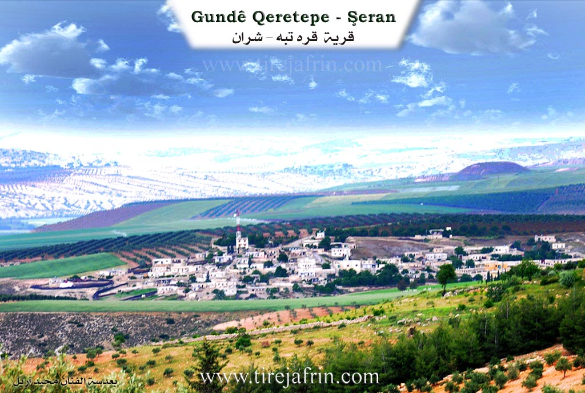
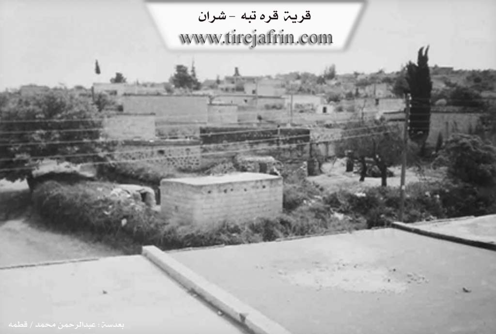

General Information
Nahiya (Subdistrict)
Şera
Also Known As
Al-Tall Al-Aswad, Gire Reş, Qara Tapa, Qere Tepe, Qeredepe, التل الأسود (AR translation), قره تبه
Tribes
Egêl, Qurtik
Families, Clans, etc.
Bekir, Bettal, Bêcî, Ehmed Hec Mihemed, Elî Şêxo, Hac Kenco, Hemo, Hemî Senemê, Sebrî Şemsî, Seydî Ûso, Silêman, Şêxoyê Eylikê

Photos


Basic Information about Qeredepe
Source: Tirej Afrin
Etymology: Turkish origin meaning Black Hill (Qere + Tepe), named for the volcanic plateau with black soil located on the village's northeastern side
Foundation Date/Period: Approximately 300 years ago
Springs: Kefir Cenê
Other Landmarks: Çemê Kefir Cenê
Summaries
I. Summary from TirejAfrin Site (English) of Qeredepe
Source: https://www.tirejafrin.com/site/kura%20afrin%20%20sheran%20-%20Qeredepe.htm
Based on the book Çiyayê Kurmênc (Efrîn): A Geographical Study: Qeredepe, Qere Tepe, The Black Hill /1241 inhabitants 606 hectares 6km 440m altitude/:
The folk name Qeredepe is of Turkish origin meaning the Black Hill (Qere + Tepe). It is a designation for the volcanic plateau upon whose northeastern side the village lies. The name after Arabization is an Arabic translation of the folk name.
It is a medium sized village situated on the northeastern slope of a plateau covered by a crumbled basalt mantle. The Çemê Kefir Cenê (stream of Kefir Cenê) passes to the east of the village. It contains factories for pirina (olive pomace), a center for selling fuel, and several halls for holding wedding parties.
Based on the book Efrîn... Her River and Her Green Hills: Qere Tepe is a village in Çiyayê Kurmênc belonging to the Şera district, Efrîn region, Heleb governorate (1199 inhabitants). It is a large village situated on an agricultural plateau and a slope facing north; its lands are black basalt.
It is bordered to the north by a slope, a fertile agricultural plain, and the village of Kortek (The Pit). To the south, by an agricultural rise planted with olive trees and vines, and the villages of Cumkê and Şêx Sîdo. To the east, by a slope planted with olive trees, the Riya Efrîn-Heleb (Efrîn Heleb road), some wedding venues, the village of Kefer Mez and Erşqîbar, and the valley of Kefir Cenê. To the west, by a slope and mountainous rise planted with olive trees and the village of Qestel Kişk.
The number of its houses is about 100 and its age is about 300 years. Its old residences are stone and mud with wooden roofs, and the modern ones are cement. An electricity network is available, as well as drinking water from the path of the Kefir Cenê spring. It contains a modern primary and preparatory school. The road connecting to it and the region and district is paved and passes through its center to the village of Qestel Kişk.
There are two modern olive presses on the Riya Efrîn (Efrîn road), several modern villas on the eastern side of the village, and five wedding halls. Its residents work in the cultivation of olives and vines and livestock breeding. The village was called by this name because the limestone plateau upon which the village stands is covered with black volcanic soil.
Village Mukhtar: Ebdulhenan Hemo
Sources of Information:
- Book: جبل الكرد (عفرين) دراسة جغرافية Çiyayê Kurmênc (Efrîn): A Geographical Study by د. محمد عبدو علي Dr. Mihemed Ebdo Elî.
- Book: عفرين .... نهرها وروابيها الخضراء Efrîn... Her River and Her Green Hills by عبدالرحمن محمد Ebdulrehman Mihemed from the village of Qetme.
- Studies of Navenda Tirej Soft / Ebdulrehman Hacî Osman.
- Some residents of the villages.
Preparation and Execution: Manager of Tirej Efrîn site: Ebdulrehman Hacî Osman 20/12/2013
II. Summary of Qeredepe from Afrin 366
Source: https://www.youtube.com/watch?v=jqqKoq4BT0s
The documentary provides an in depth look at the village of Qere Depe, situated along the road to Heleb in the Efrîn region. The host explains the etymology of the village name, noting that it comes from Turkish words meaning black hill, which perfectly describes the dark and fertile soil found throughout the local area.
An eighty five year old elder named Mihemed shares valuable historical insights about the settlement. He estimates that Qere Depe was founded approximately three to four hundred years ago. He traces his own lineage back four or five generations of ancestors who lived and passed away in the very same location. According to Mihemed, the demographic makeup of the village is approximately half Kurd and half Arab. He recounts that Arab populations originally arrived and lived in tents on undeveloped land before eventually settling permanently. For the past century, both groups have lived together harmoniously.
The village was established by several core households. The elders identify the foundational families as Şêxoyê Eylikê, Hemî Senemê, Seydî Ûso, and Elî Şêxo. During the extensive tour, the host specifically visits the family homes of Ehmed Hec Mihemed and Sebrî Şemsî.
Qere Depe has a rich agricultural and industrial profile. Historically, residents survived by cultivating tobacco, grapes, and other local crops. The elders fondly recall a time when life was much harder but natural food felt far more authentic. Today, the village is not just agricultural but also highly commercial, housing soap factories, tailoring workshops, and a popular local wedding venue known as Meqsef. Near the entrance of the village lies Mehetê Şîmendo, an old ruined train station that stands as a historic landmark.
Daily life in the village requires considerable resilience. The public water supply is often unreliable, prompting many families to finance and dig their own private wells. Children attend the local school up to the ninth grade and then must travel to Efrîn or Heleb to complete their higher education. Despite these challenges, the residents are immensely proud of their strong educational culture, boasting numerous teachers, university graduates, and professionals among their ranks. The village is deeply religious, as evidenced by a featured sermon delivered at the local mosque during the holy month of Ramadan.
While looking out over the elevated landscape, the men point out several neighboring villages, including Kefer Romê, Gevrîk, Şorba, Sêmala Şêxwîtka, Qurtqilaq, Meşalê, and Metîna. They also reference a sacred local site named Ziyareta Xanan located near the crossroads leading to Şera. The video eventually concludes near the driving instruction zone by the famous arch landmark known as Qewsê Efrînî.
II. Summary of Qeredepe from Khalil Sino
Source: https://www.youtube.com/watch?v=UNv8h7py35M
The documentary provides an intimate glimpse into the daily life and struggles of Qeretepe, a village located in the Efrîn region. Hosted by Hatîm and his sister Aliya, along with Xelîl, the program centers around visiting local residents to share and prepare a fast breaking meal. The episode is supported by community figures like Alî Îsa and Şêrvan Beşîr.
Historically, the settlement has endured longstanding infrastructural challenges. According to one local resident, Emîna Xelîl, the village has existed for approximately three centuries, and for that entire duration, the community has suffered from a severe lack of water. Residents still rely on hauling water manually in large buckets, as there are no functioning local wells to draw from. The village features very limited amenities, containing just one school, about five small shops, and absolutely no hospital or medical clinic.
The social fabric of Qeretepe consists of original residents and newer arrivals. The host notes that several displaced families fled from the Şêx Meqsûd neighborhood in the city of Heleb and sought refuge in the village. Marriage networks also connect Qeretepe to surrounding settlements. During the interviews, the hosts speak with women who moved to the village upon marriage. One woman reveals she is originally from the village of Xecûkê and briefly mentions an Arab individual while discussing her past. She shares the heavy financial burden she carries due to her husband needing major heart surgery, which left her family in deep debt. Another resident, Emîna Hesen, explains she is originally from the village of Darê. She raised six daughters and one son, and currently lives quietly with one of her daughters.
Economically, Qeretepe relies heavily on agriculture, specifically olive groves. However, residents report that the olive harvests have completely failed for the past two years due to severe drought and dry soil. Because farming is failing and there is no other physical labor available, the youth of the village are forced to migrate to the central city of Efrîn to find employment.
Despite the harsh economic conditions, widespread poverty, and a lack of basic services, the villagers maintain a strong sense of hospitality. The hosts purchase basic supplies like rice, lentils, macaroni, coffee, and dates from a local shopkeeper to cook a vegetarian meal alongside Emîna Xelîl, who notes she never eats meat. The documentary concludes with a traditional folk song that evokes a deep sense of longing, referencing the mountains of Amedê alongside figures named Teco and Cemîlo, painting a poignant picture of endurance and cultural memory in Qeretepe.
II. Summary of Qeredepe from Multi Channel
Qere Tepe is an industrious village located seven kilometers east of Efrîn city and attached to the Şeran subdistrict. It is topographically and geographically connected to neighboring hills, specifically the hills of Kortek to the northeast and Ereş Qîbar to the southwest. The village is bounded by Qestel Kişk to the west and Cûmkê to the southeast.
Historically, Qere Tepe was situated along the old Silk Road. In the past, a caravanserai known as Xan Berî Moxle provided rest for passing caravans, though today an olive press is built over its ruins. Another notable historical landmark is Pira Awec, an old Ottoman era bridge that spans the river flowing from Kefercenê. Originally used for carts, this bridge was eventually replaced by a newer one for motor vehicles but remains a testament to the deep history of the area.
Although the documentary does not mention specific Kurdish tribes or families, it highlights the changing social fabric of the village. Today, displaced people make up forty percent of the population. Displaced Arab families, including individuals like Ehmed Ebû Hesen from Ebû El Zuhûr and blacksmiths Enes El Casim and Mihemed Elî El Zêdan from Cezraya, live in surrounding camps and within the village. The relationship between the Kurdish locals and the displaced Arab families is described as highly cooperative. The newcomers have introduced their own cultural practices, such as serving bitter coffee and singing folk genres like Ataba, Nêl, and Swêhlî, while simultaneously adopting local Kurdish customs. For instance, Arab residents like Um Îbrahîm have learned to cook traditional Kurdish winter dishes such as Kolik, which is a thick stew made of lentils and bulgur, alongside other local foods like Borani and Şîşberek.
Qere Tepe is uniquely renowned for its robust industrial and agricultural economy. Because of the abundant olive groves in the region, the village hosts five to six olive pomace factories and several soap factories, exporting products to distant Syrian cities like Şam, Hims, and Hema. It also features stone cutting workshops, a potato chip factory, and sewing workshops. Furthermore, to spare locals the long and costly trip to Heleb, several wedding halls were established in the village a few years ago.
Despite modernization, traditional heritage remains alive among the elders. Men like Necm Ebû Hesen, Ebû Îbrahîm, and Ebû Mihemed fondly recall older ways of life and continue to wear traditional garments, including the Birîm, Cilabî, and the red or white Cemdanî headdress. They remember when women wore the Merkezît with a white Mihreme and a black Şitfe. Elder residents reminisce about the traditional mud and wood houses, communal meals, and collective care for the sick, noting how figures like Şêx Xelîl were visited by the whole community. Education in the village began with a primary school in 1970 and now includes a preparatory school where teachers like Mamoste Mihemed educate around three hundred students.
II. Summary of Qeredepe from Multi Channel 2
The documentary provides an in depth look at the agricultural village of Dombilî, known in Arabic as Al Amsiya, located in the Efrîn region. Situated ten kilometers southwest of Raco, the village is bordered by Derwîşiya to the north, Kurkanê Jêrîn to the south, and Baedîna to the east. Before the Syrian conflict, the population consisted of nearly three thousand Kurdish residents. Today, it is home to approximately one thousand original inhabitants and an equal number of displaced persons originating from regions like Cebel El Zawiye and Mearret El Numan. The original demographic consists entirely of Kurds, with elders explicitly noting the historical absence of Arab or Turkmen communities among the native population.
The physical history of Dombilî is deeply tied to its geography. The earliest inhabitants lived in natural caves. As generations passed, these caves were repurposed into animal shelters or cellars, and residents built traditional homes above them using stone, mud, and wooden roofs. Today, modern cement houses stand alongside these historical structures. One elder, Ebû Evdo, shares his family history, tracing his lineage back eight or nine generations. He recounts that his ancestor Umer migrated to the village from an area known as Erebê Şaxê. Umer was followed by a direct lineage of single male heirs consisting of Bîlal, Ehmed, Mihemed, another Mihemed, Şêxo, Evdo, and finally Ebû Evdo himself.
Socially, the village is built upon several foundational lineages. When asked about the oldest families, a local man identifies the Bettal, Silêman, and Bêcî families as the original pillars of the community. Other significant family names mentioned by residents include Hemo, Hac Kenco, and Bekir. The villagers pride themselves on their traditional hospitality, stating that they warmly welcome respectful strangers but will swiftly sever ties with those who do not show proper respect.
The local economy relies almost entirely on agriculture, particularly olive farming. The village lands hold roughly fifty thousand olive trees, primarily of the Zeytî and Xilxalî varieties, the latter referred to locally as Xilo. Families spend up to two months harvesting olives, a season that dictates the rhythm of daily life. They also cultivate walnuts, almonds, sumac, wheat, and barley, while maintaining small herds of sheep and goats.
Traditional culture remains resilient, with older residents continuing to wear the classic Kurdish trousers known as the Şalwar. Women in the village prepare traditional meals such as Asîda, a sweet dish made by mixing flour with grape molasses, alongside Kufta, Dûberkî, and Şorbê Şiberek. Culturally, the village is also known for a traditional dance performed during weddings called Xatûnê, which remains the most prominent artistic expression in their otherwise quiet farming lives.
II. Summary of Qeredepe from Multi Channel 3
The documentary explores the village of Qeretepe located in the Şera district of Efrîn. The village name originates from Turkish translating to Black Hill referring to the dark soil found in the area.
According to local historian Henan Reşîd Ebû Xalid the village was established over five hundred years ago coinciding with historical conflicts like the Battle of Chaldiran and the Battle of Marj Dabiq. The original settlers migrated from the Kobanê area to a village called Qibercik. Three brothers from the Qurtik tribe relocated with one founding Qeretepe another settling in Qîbar and the third in Qirta which is currently known as Hozan.
Initially Qeretepe was an empty land covered with oak trees. The early residents were primarily shepherds who raised livestock and cultivated wheat barley and lentils. About eighty years ago Arab families from the Egêl tribe arrived. Before building permanent homes these early Arab settlers lived in dugouts called Hefayir which were pits dug half a meter into the earth and covered with tents to protect against the winter cold and summer heat. Over time the village transformed as residents began planting olive groves extensively about fifty years ago. Elder Xemîs recalls how the community used to build houses from mud and stone before transitioning to concrete structures.
The village is notable for its historic railway connection. The Berlin Byzantium Baghdad railway line built by the Germans around 1912 passes through the village. A workers station named Qiwêliq was constructed here. The train route enters from Meydan Ekbes in Turkey passes Qurtqulaq Qeretepe Qetmê Til Rifet and goes toward Heleb and Mislimiyê. A supplementary track was also built by the British in 1942 to assist steam trains carrying heavy loads.
Socially Qeretepe is characterized by deep harmony between its Kurdish and Arab inhabitants. An elderly Arab resident Yûsif El Hesen El Himêdî emphasizes the strong bonds of coexistence noting that residents share agricultural work weddings and funerals without distinction. There is even a historic practice of shared nursing where Kurdish and Arab women would breastfeed each others infants creating strong kinship ties. Both groups speak each others languages fluently with Kurdish residents speaking the local Arab Bedouin dialect and Arab residents speaking Kurmanji.
Recently Qeretepe became a refuge for displaced Arab families from Hims including places like Telbîse and Rastan following the war. Displaced individuals like Ebû Telal have integrated smoothly introducing new agricultural practices such as cultivating black seed establishing apiaries and fattening calves. The local mosque led by Şêx Mihemed provides Quranic and basic education to over one hundred and fifty children ensuring the continuity of education and community cohesion.
Transcriptions and Subtitles
| Source | Video | Subtitles | Transcript |
|---|---|---|---|
| Afrin 366 1 | Watch Video | Download SRT | View Transcript |
| Khalil Sino 1 | Watch Video | Download SRT | View Transcript |
| Multi Channel 1 | Watch Video | Download SRT | View Transcript |
| Multi Channel 2 | Watch Video | Download SRT | View Transcript |
| Multi Channel 3 | Watch Video | Download SRT | View Transcript |
Possible Village Name Meaning of Qeredepe
The folk name Qeredeba is Turkish in origin, meaning 'the black hillock,' which is a name for the volcanic plateau where the village is located. The Arabized name is a translation. The village was named this because the plateau is covered with black volcanic soil.
Source: TirejAfrin Site
V. Links
- Tirej Afrin:
https://www.tirejafrin.com/site/kura%20afrin%20%20sheran%20-%20Qeredepe.htm - Jawlat:
https://www.youtube.com/watch?v=jBgQ40_RuFE - Link:
https://www.youtube.com/watch?v=4utBqYpSQrE - Drone video:
https://www.youtube.com/watch?v=2E9FrimR7nI - Link:
https://www.youtube.com/watch?v=D9sQDvdUxSE - Video:
https://www.youtube.com/watch?v=yvee7YZVnaU - Afrin 366:
https://www.youtube.com/watch?v=jqqKoq4BT0s - Khalil Sino:
https://www.youtube.com/watch?v=UNv8h7py35M - Multi Channel:
https://www.youtube.com/watch?v=a9-IIcV3ve8